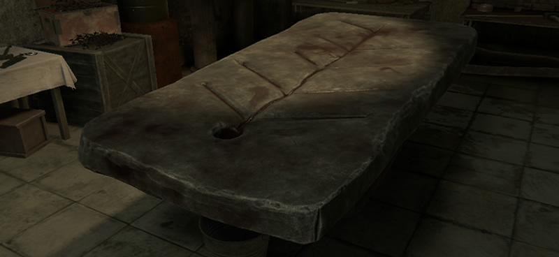
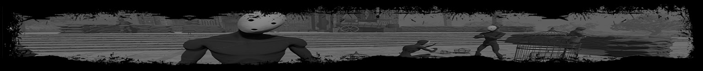
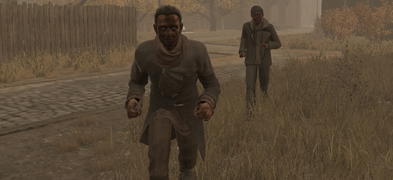
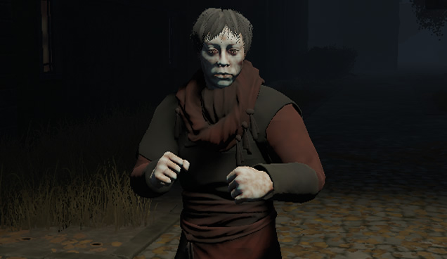
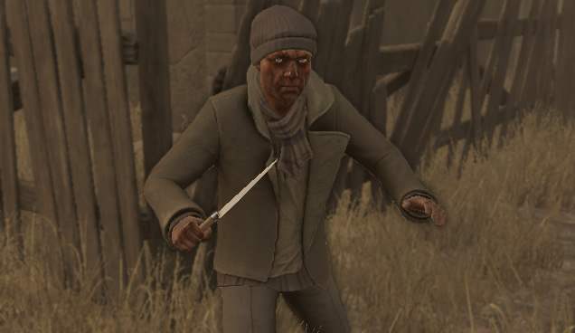
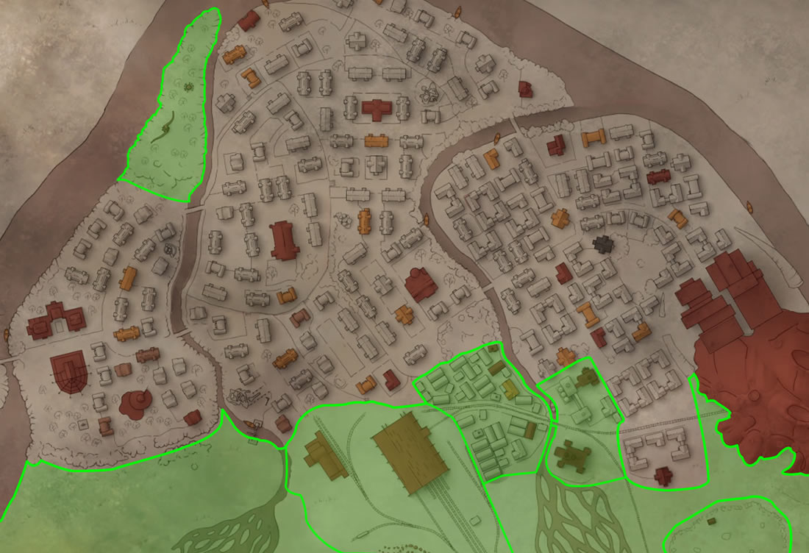
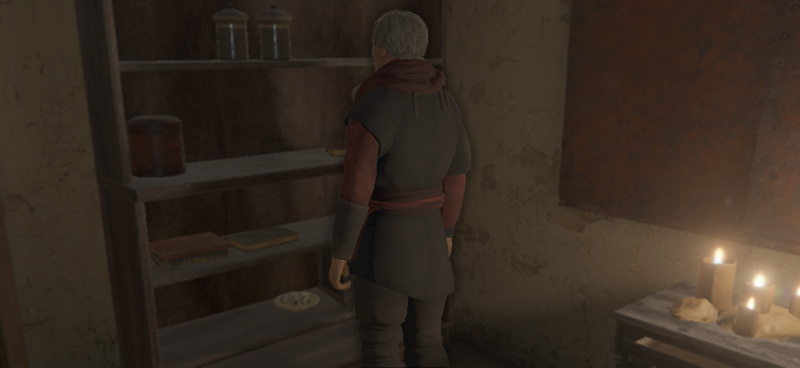
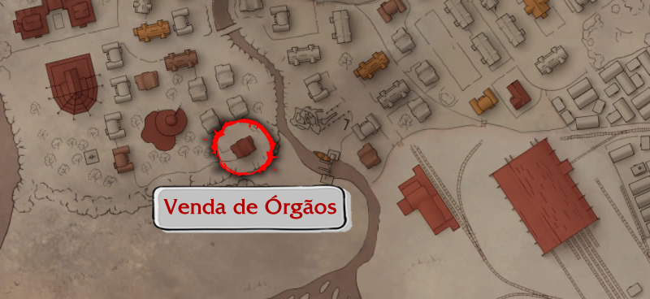

Bem-vindo ao nosso guia sobre dinheiro! Aqui mostrarei passo a passo como conseguir muito dele através do mercado negro de órgãos, tudo que você irá precisar é de um bisturi e uma arma com 2 balas, sobre o método de forma resumida, atraímos bandidos solitários para áreas isoladas, os matamos, coletamos seus órgãos e os vendemos, simples assim!

ATENÇÃO: Essa tática é bastante perigosa e exige um certo conhecimento do sistema de luta do jogo, por isso antes de qualquer coisa recomendo ver nosso guia sobre Combate clicando AQUI.

Introducao
Antes de partir para o passo a passo é importante esclarecer algumas coisas...
Inimigos
Nesse método nosso objetivo inicial é encontrar um bandido (de preferência desarmado) que esteja sozinho, existem dois tipos de bandidos, veja abaixo quais são e onde encontra-los:

Cara Pálida

Esse tipo de bandido costuma ser o mais fácil de se enfrentar, pois geralmente anda sozinho e parece ter uma menor chance de ter alguma arma. Pode ser encontrado durante a noite (00:00 ~ 07:30) em áreas saudáveis da cidade, ou seja, que não estejam infectadas nem destruídas.
Assassino

Já esse bandido apesar de ser fácil de encontrar é mais perigoso, costuma andar em grupos o que pode tornar um desafio atrair algum que esteja sozinho, ao ser visto por um fique atento aos seus arredores pois outros podem detecta-lo, mesmo que estejam do outro lado de muros ou casas! Pode ser encontrado durante todo o dia e noite nas áreas destruídas da cidade.
DICA #1: Quanto maior for o número do dia que você estiver, maior será a chance dos bandidos estarem armados!
DICA #2: Nem sempre será possível atrair sua presa para fora da cidade, se for um lugar longe da "zona verde" guardas provavelmente irão atrapalhar seus planos pelo caminho, nesse caso pode ser melhor sacrificar sua reputação no local mesmo.
Terreno
Tendo falado um pouco sobre o que iremos caçar, agora precisamos aprender um pouco sobre o terreno, é de extrema importância que ao escolher seu alvo você o atraia até fora da cidade ou algum lugar não-populado, como você deve bem saber as pessoas não reagem bem a cirurgiões roubando órgãos de corpos no meio da rua. Por isso para evitarmos qualquer dano a nossa reputação atraia sua presa para dentro dessa zona verde que marquei no mapa abaixo, dentro dela qualquer crime (seja a bandido ou inocente) não afetará sua reputação!

DICA #1: Adicionei também algumas estrelinhas em certas zonas da cidade onde você terá maior facilidade de caçar, como são locais vizinhos a "zona verde" atrair sua presa para lá será fácil!
DICA #2: Roubar sangue de corpos não afeta sua reputação, não importa onde você estiver, por isso certifique-se de coletar o sangue de todas as pessoas mortas que encontrar.
Venda de Orgaos
Quanto a venda de órgãos é bem simples, tudo que você precisa fazer é levar-los a essa casa marcada no mapa abaixo, dentro dela prossiga para a parte de trás do balcão onde encontrará um estranho mercador. Esse homem só tem interesse em órgãos saudáveis e como todo comerciante possui um determinado valor em dinheiro consigo, o que não o permite comprar mais órgãos que possa pagar.


DICA #1: Todas as noites as 00:00 esse mercador receberá mais dinheiro junto com novos itens medicinais para troca.
DICA #2: Caso o mercador não tenha dinheiro para comprar todos os seus órgãos, recomendo guardar o que sobrou para vender em outra noite, apesar de ser tentador os itens que ele tem para troca não costumam superar o valor do dinheiro.